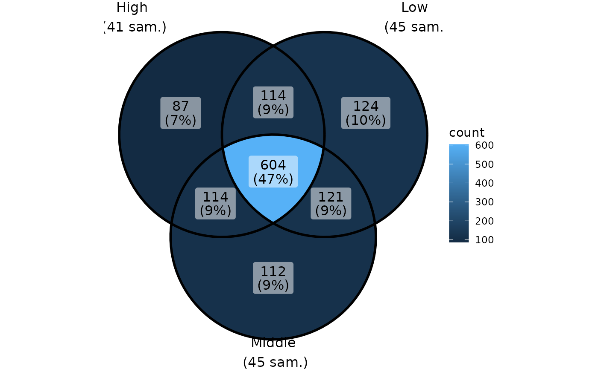
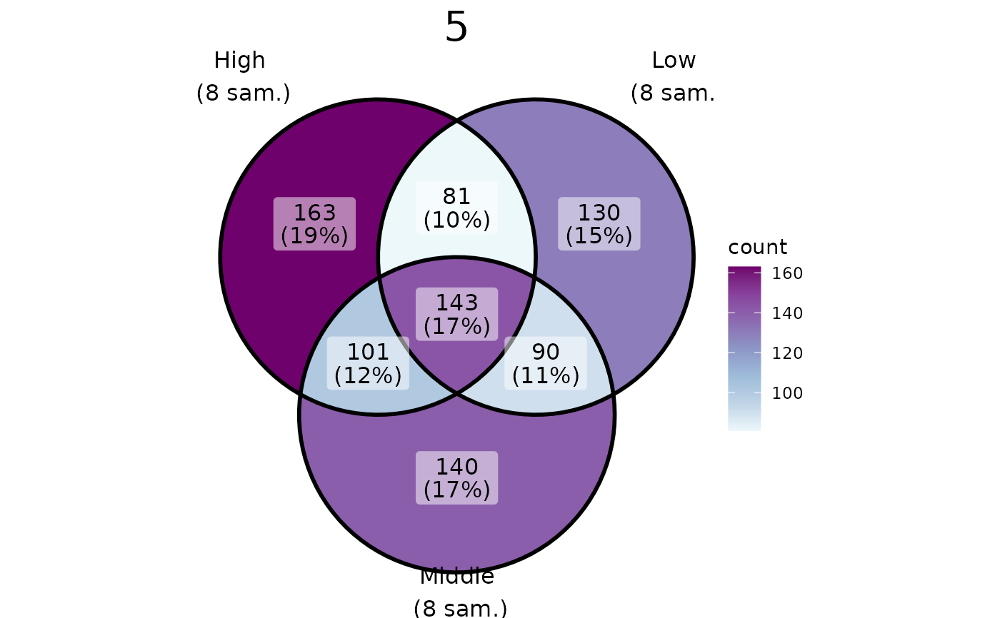
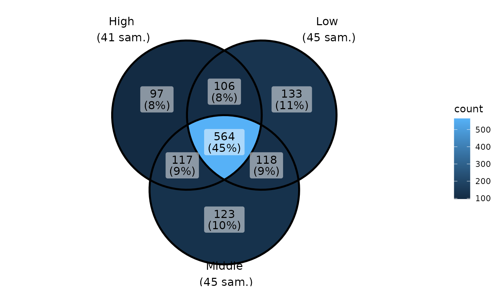

Venn diagram of phyloseq-class object using
ggVennDiagram::ggVennDiagram function
Source: R/plot_functions.R
ggvenn_pq.Rd![[Maturing]](figures/lifecycle-maturing.svg)
Note that you can use ggplot2 function to customize the plot
for ex. + scale_fill_distiller(palette = "BuPu", direction = 1)
Usage
ggvenn_pq(
physeq = NULL,
fact = NULL,
merge_sample_by = NULL,
min_nb_seq = 0,
taxonomic_rank = NULL,
split_by = NULL,
...
)Arguments
- physeq
(required): a
phyloseq-classobject obtained using thephyloseqpackage.- fact
(required): Name of the factor to cluster samples by modalities. Need to be in
physeq@sam_data.- merge_sample_by
if not
NULLsamples of physeq are mereged using the vector set bymerge_sample_by. This merging used thespeedyseq::merge_samples2(). Ifmerge_sample_byis equal tofactargs it give the same result as ifmerge_sample_byis NULL.- min_nb_seq
minimum number of sequences by OTUs by samples to take into count this OTUs in this sample. For example, if min_nb_seq=2,each value of 2 or less in the OTU table will not count in the venn diagramm
- taxonomic_rank
Name (or number) of a taxonomic rank to count. If set to Null (the default) the number of OTUs is counted.
- split_by
Split into multiple plot using variable split_by. The name of a variable present in
sam_dataslot of the physeq object.- ...
other arguments for the
ggVennDiagram::ggVennDiagramfunction for ex.category.names.
Value
A ggplot2 plot representing Venn diagramm of
modalities of the argument factor or if split_by is set a list
of plots.
Examples
data(data_fungi)
ggvenn_pq(data_fungi, fact = "Height")

ggvenn_pq(data_fungi, fact = "Height") + ggplot2::scale_fill_distiller(palette = "BuPu", direction = 1)
pl <- ggvenn_pq(data_fungi, fact = "Height", split_by = "Time")
for (i in 1:length(pl)) {
p <- pl[[i]] +
scale_fill_distiller(palette = "BuPu", direction = 1) +
theme(plot.title = element_text(hjust = 0.5, size = 22))
print(p)
}

